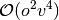
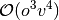
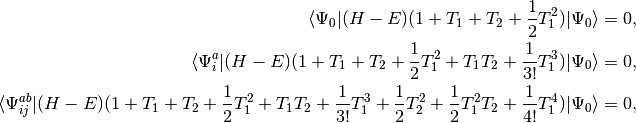
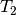
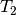
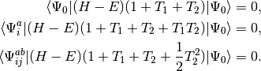
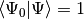
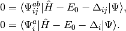
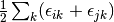
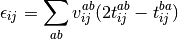

FNOCC: Frozen natural orbitals for CCSD(T), QCISD(T), CEPA, and MP4¶
Code author: A. Eugene DePrince
Section author: A. Eugene DePrince
Module: Keywords, PSI Variables, FNOCC
Frozen natural orbitals (FNO)¶
The computational cost of the CCSD [Purvis:1982], CCSD(T)
[Raghavachari:1989], and related methods be reduced by constructing a
compact representation of the virtual space based on the natural orbitals
of second-order perturbation theory [Sosa:1989:148]. The most demanding
steps in the CCSD and (T) algorithms scale as 
and , where  and
and  represent the
number of oribitals that are occupied and unoccupied (virtual) in the
reference function, respectively. By reducing the the size of the virtual
space, the cost of evaluating these terms reduces by a factor of
represent the
number of oribitals that are occupied and unoccupied (virtual) in the
reference function, respectively. By reducing the the size of the virtual
space, the cost of evaluating these terms reduces by a factor of  , where
, where  represents the number of virtual
orbitals retained after the FNO truncation.
represents the number of virtual
orbitals retained after the FNO truncation.
The general outline for the FNO procedure in PSI4 is:
- construct the virtual-virtual block of the unrelaxed MP2 one-particle density matrix (OPDM)
- diagonalize this block of the OPDM to obtain a set of natural virtual orbitals
- based on some occupancy threshold, determine which orbitals are unimportant and may be discarded
- project the virtual-virtual block of the Fock matrix onto the truncated space
- construct semicanonical orbitals by diagonalizing the virtual-virtual block of the Fock matrix
- proceed with the QCISD(T) / CCSD(T) / MP4 computation in the reduced virtual space
A second-order correction based upon the MP2 energies in the full and truncated spaces captures much of the missing correlation effects. More details on the implementation and numerical accuracy of FNO methods in PSI4 can be found in Ref. [DePrince:2013:293]. FNO computations are controlled through the keywords NAT_ORBS and OCC_TOLERANCE, or by prepending a valid method name with “fno” in the energy call as
energy('fno-ccsd(t)')
QCISD(T), CCSD(T), MP4, and CEPA¶
The FNOCC module in PSI4 supports several related many-body quantum chemistry methods, including the CCSD(T) and QCISD(T) methods, several orders of many-body perturbation theory (MP2-MP4), and a family methods related to the coupled electron pair approximation (CEPA).
Quadratic configuration interaction and coupled cluster¶
The quadratic configuration interaction singles doubles (QCISD) method of Pople, Head-Gordon, and Raghavachari [Pople:1987:5968] was originally presented as a size-consistent extension of configuration interaction singles doubles (CISD). The method can also be obtained as a simplified version of the coupled cluster singles doubles (CCSD) method [Purvis:1982]. Consider the set of equations defining CCSD:
(1)
where we have chosen the intermediate normalization,
 , and the symbols
, and the symbols  and  represent single and double excitation operators. The
QCISD equations can be obtained by omitting all but two terms that
are nonlinear in and :
and  represent single and double excitation operators. The
QCISD equations can be obtained by omitting all but two terms that
are nonlinear in and :
(2)
QCISD is slightly cheaper that CCSD computationally, but it retains the complexity of the original equations. Just as in the familiar CCSD(T) method, the effects of connected triple excitations may be included noniteratively to yield the QCISD(T) method. Both the QCISD(T) and CCSD(T) methods are implemented for closed-shell references in the FNOCC module.
Many-body perturbation theory¶
QCI and CC methods are closely related to perturbation theory, and the MP2, MP3, and MP4(SDQ) correlation energies can be obtained as a free by-product of a CCSD or QCISD computation. The following is an example of the results for a computation run with the call energy('fno-qcisd') to energy():
QCISD iterations converged!
OS MP2 FNO correction: -0.000819116338
SS MP2 FNO correction: -0.000092278158
MP2 FNO correction: -0.000911394496
OS MP2 correlation energy: -0.166478414245
SS MP2 correlation energy: -0.056669079827
MP2 correlation energy: -0.223147494072
* MP2 total energy: -76.258836941658
OS MP2.5 correlation energy: -0.171225850256
SS MP2.5 correlation energy: -0.054028401038
MP2.5 correlation energy: -0.225254251294
* MP2.5 total energy: -76.260943698880
OS MP3 correlation energy: -0.175973286267
SS MP3 correlation energy: -0.051387722248
MP3 correlation energy: -0.227361008515
* MP3 total energy: -76.263050456101
OS MP4(SDQ) correlation energy: -0.180324322304
SS MP4(SDQ) correlation energy: -0.048798468084
MP4(SDQ) correlation energy: -0.230995119324
* MP4(SDQ) total energy: -76.266684566910
OS QCISD correlation energy: -0.181578117924
SS QCISD correlation energy: -0.049853548145
QCISD correlation energy: -0.231431666069
* QCISD total energy: -76.267121113654
The first set of energies printed corresponds to the second-order FNO correction mentioned previously. Results for many-body perturbation theory through partial fourth order are then provided. The notation MP4(SDQ) indicates that we have included all contributions to the correlation energy through fourth order, with the exception of that from connected triple excitations.
One need not run a full QCISD or CCSD computation to obtain these perturbation theory results. The keywords for invoking perturbation theory computations are given below in Table FNOCC Methods. Full MP4 correlation energies are also available.
Coupled electron pair approximation¶
Coupled-pair methods can be viewed as approximations to CCSD or as size-extensive modifications of CISD. The methods have the same complexity as CISD, and solving the CISD or coupled-pair equations requires fewer floating point operations than solving the CCSD. CISD, CCSD, and the coupled-pair methods discussed below all scale formally with the sixth power of system size, and, as with the QCISD method, CEPA methods retain complexity of the CCSD equations. For a detailed discussion of the properties of various coupled-pair methods, see Ref. [Wennmohs:2008:217].
What follows is a very basic description of the practical differences in the equations that define each of the coupled-pair methods implemented in PSI4. We begin with the CISD wave function
(3)
where we have chosen the intermediate normalization, . The CISD correlation energy is given by
(4)
and the amplitudes can be determined by the solution to the coupled set of eqations:
(5)
The CISD method is not size-extensive, but this problem can be overcome by
making very simple modifications to the amplitude equations. We replace
the correlation energy,  , with generalized shifts for the
doubles and singles equations,
, with generalized shifts for the
doubles and singles equations,  and
and  :
:
(6)
These shifts approximate the effects of triple and quadruple excitations.
The values for and used in several
coupled-pair methods are given in Table CEPA Shifts. Note that these shifts are defined in a spin-free
formalism for closed-shell references only.
method sdci dci NA cepa(0) 0 0 cepa(1)  cepa(3) acpf aqcc


![[1-\frac{(N-3)(N-2)}{N(N-1)}]E_c](_images/math/3a90f4e1b6e9fb49e97981e384c33880eef8d3fd.png)
The pair correlation energy,  , is simply a partial
sum of the correlation energy. In a spin-free formalism, the pair energy
is given by
, is simply a partial
sum of the correlation energy. In a spin-free formalism, the pair energy
is given by
(7)
Methods whose shifts ( and ) do not
explicitly depend on orbitals  or
or  (CISD, CEPA(0), ACPF,
and AQCC) have solutions that render the energy stationary with respect
variations in the amplitudes. This convenient property allows density
matrices and 1-electron properties to be evaluated without any additional
effort. Note, however, that 1-electron properties are currently
unavailable when coupling these stationary CEPA-like methods with frozen
natural orbitals.
(CISD, CEPA(0), ACPF,
and AQCC) have solutions that render the energy stationary with respect
variations in the amplitudes. This convenient property allows density
matrices and 1-electron properties to be evaluated without any additional
effort. Note, however, that 1-electron properties are currently
unavailable when coupling these stationary CEPA-like methods with frozen
natural orbitals.
Density-fitted coupled cluster¶
Density fitting (DF) [or the resolution of the identity (RI)] and Cholesky decomposition (CD) techniques are popular in quantum chemistry to avoid the computation and storage of the 4-index electron repulsion integral (ERI) tensor and even to reduce the computational scaling of some terms. DF/CD-CCSD(T) computations are available in PSI4, with or without the use of FNOs, through the FNOCC module. The implementation and accuracy of the DF/CD-CCSD(T) method are described in Ref. [DePrince:2013:inpress].
The DF-CCSD(T) procedure uses two auxiliary basis sets. The first set is that used in the SCF procedure, defined by the DF_BASIS_SCF keyword. If this keyword is not specified, an appropriate -JKFIT set is automatically selected. This auxiliary set defines the ERI’s used to build the Fock matrix used in the DF-CCSD(T) procedure. The second auxiliary set is used to approximate all other ERI’s in the DF-CCSD(T) procedure. The choice of auxiliary basis is controlled by the keyword DF_BASIS_CC. By default, DF_BASIS_CC is the RI set (optimized for DFMP2) most appropriate for use with the primary basis. For example, if the primary basis is aug-cc-pVDZ, the default DF_BASIS_CC will be aug-cc-pVDZ-RI.
Alternatively, the user can request that the DF-CCSD(T) procedure use a set of vectors defined by the Cholesky decomposition of the ERI tensor as the auxiliary basis. This feature is enabled by specifying DF_BASIS_CC as “CHOLESKY”. CD methods can be enabled in the SCF procedure as well, by specifying the SCF_TYPE as “CD”. The accuracy of the decomposition can be controlled through the keyword CHOLESKY_TOLERANCE.
The following input file sets up a DF-CCSD(T) computation using CD integrals
molecule h2o {
0 1
O
H 1 1.0
H 1 1.0 2 104.5
}
set {
scf_type cd
df_basis_cc cholesky
basis aug-cc-pvdz
freeze_core true
}
energy('df-ccsd(t)')
The resulting CCSD(T) correlation energy will be equivalent to that
obtained from a conventional computation if CHOLESKY_TOLERANCE is
sufficiently small (e.g.  ).
).
Gn theory¶
The FNOCC module contains all the components that comprise the Gn family of composite methods. Currently, only the G2 method is supported [Curtiss:1991:7221]. The G2 procedure may be called through the energy() wrapper:
energy('gaussian-2')
Supported methods¶
The various methods supported by the FNOCC module in PSI4 are detailed in Table FNOCC Methods. Note that these methods are implemented for closed-shell references only. For open-shell references, the calls energy('mp2.5'), energy('mp3'), and energy('mp4') will default to the DETCI implementations of these methods.
name calls method qcisd quadratic configuration interaction singles doubles qcisd(t) qcisd with perturbative triples mp2.5 average of second- and third-order perturbation theories mp3 third-order perturbation theory mp4(sdq) fourth-order perturbation theory, minus triples contribution mp4 full fourth-order perturbation theory cepa(0) coupled electron pair approximation, variant 0 cepa(1) coupled electron pair approximation, variant 1 cepa(3) coupled electron pair approximation, variant 3 acpf averaged coupled-pair functional aqcc averaged quadratic coupled-cluster sdci configuration interaction with single and double excitations dci configuration interaction with double excitations fno-qcisd qcisd with frozen natural orbitals fno-qcisd(t) qcisd(t) with frozen natural orbitals fno-ccsd coupled cluster singles doubles with frozen natural orbitals fno-ccsd(t) ccsd with perturbative triples and frozen natural orbitals fno-mp3 mp3 with frozen natural orbitals fno-mp4(sdq) mp4(sdq) with frozen natural orbitals fno-mp4 mp4 with frozen natural orbitals fno-cepa(0) cepa(0) with frozen natural orbitals fno-cepa(1) cepa(1) with frozen natural orbitals fno-cepa(3) cepa(3) with frozen natural orbitals fno-acpf acpf with frozen natural orbitals fno-aqcc aqcc with frozen natural orbitals fno-sdci sdci with frozen natural orbitals fno-dci dci with frozen natural orbitals df-ccsd ccsd with density fitting df-ccsd(t) ccsd(t) with density fitting fno-df-ccsd ccsd with density fitting and frozen natural orbitals fno-df-ccsd(t) ccsd(t) with density fitting and frozen natural orbitals
Basic FNOCC Keywords¶
BASIS¶
Primary basis set
- Type: string
- Possible Values: basis string
- Default: No Default
FREEZE_CORE¶
Specifies how many core orbitals to freeze in correlated computations. TRUE will default to freezing the standard default number of core orbitals. For PSI, the standard number of core orbitals is the number of orbitals in the nearest previous noble gas atom. More precise control over the number of frozen orbitals can be attained by using the keywords NUM_FROZEN_DOCC (gives the total number of orbitals to freeze, program picks the lowest-energy orbitals) or FROZEN_DOCC (gives the number of orbitals to freeze per irreducible representation)
- Type: string
- Possible Values: FALSE, TRUE
- Default: FALSE
R_CONVERGENCE¶
Convergence for the CC amplitudes. Note that convergence is met only when E_CONVERGENCE and R_CONVERGENCE are satisfied.
- Type: conv double
- Default: 1.0e-7
E_CONVERGENCE¶
Convergence criterion for CC energy. See Table Post-SCF Convergence for default convergence criteria for different calculation types. Note that convergence is met only when E_CONVERGENCE and R_CONVERGENCE are satisfied.
- Type: conv double
- Default: 1.0e-6
DIIS_MAX_VECS¶
Desired number of DIIS vectors
- Type: integer
- Default: 8
NAT_ORBS¶
Do use MP2 NOs to truncate virtual space for QCISD/CCSD and (T)?
- Type: boolean
- Default: false
OCC_TOLERANCE¶
Cutoff for occupation of MP2 NO orbitals in FNO-QCISD/CCSD(T) ( only valid if NAT_ORBS = true )
- Type: conv double
- Default: 1.0e-6
TRIPLES_LOW_MEMORY¶
Do use low memory option for triples contribution? Note that this option is enabled automatically if the memory requirements of the conventional algorithm would exceed the available resources
- Type: boolean
- Default: false
CC_TIMINGS¶
Do time each cc diagram?
- Type: boolean
- Default: false
DF_BASIS_CC¶
Auxilliary basis for df-ccsd(t).
- Type: string
- Possible Values: basis string
- Default: No Default
CHOLESKY_TOLERANCE¶
tolerance for Cholesky decomposition of the ERI tensor
- Type: conv double
- Default: 1.0e-4
CEPA_NO_SINGLES¶
Flag to exclude singly excited configurations from a coupled-pair computation.
- Type: boolean
- Default: false
Advanced FNOCC Keywords¶
MP2_SCALE_OS¶
Opposite-spin scaling factor for SCS-MP2
- Type: double
- Default: 1.20
MP2_SCALE_SS¶
Same-spin scaling factor for SCS-MP2
- Type: double
- Default: 1.0/3.0
CC_SCALE_OS¶
Oppposite-spin scaling factor for SCS-CCSD
- Type: double
- Default: 1.27
CC_SCALE_SS¶
Same-spin scaling factor for SCS-CCSD
- Type: double
- Default: 1.13
RUN_CEPA¶
Is this a CEPA job? This parameter is used internally by the pythond driver. Changing its value won’t have any effect on the procedure.
- Type: boolean
- Default: false
COMPUTE_TRIPLES¶
Do compute triples contribution?
- Type: boolean
- Default: true
COMPUTE_MP4_TRIPLES¶
Do compute MP4 triples contribution?
- Type: boolean
- Default: false
DFCC¶
Do use density fitting or cholesky decomposition in CC? This keyword is used internally by the driver. Changing its value will have no effect on the computation.
- Type: boolean
- Default: false
CEPA_LEVEL¶
Which coupled-pair method is called? This parameter is used internally by the python driver. Changing its value won’t have any effect on the procedure.
- Type: string
- Default: CEPA(0)